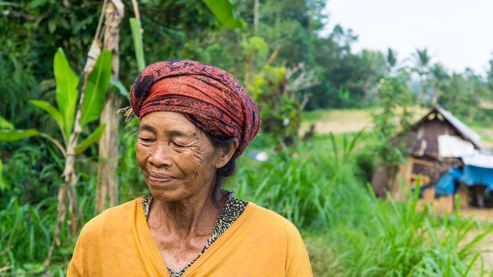
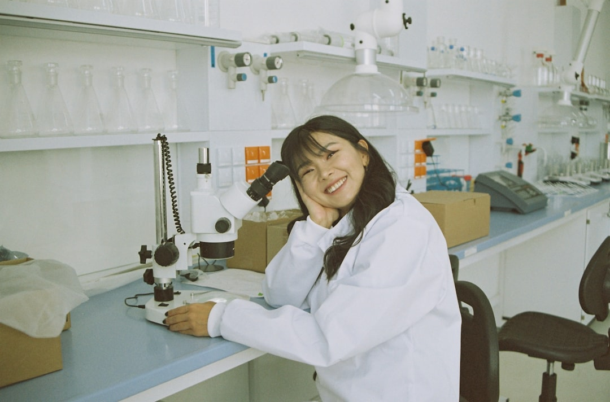
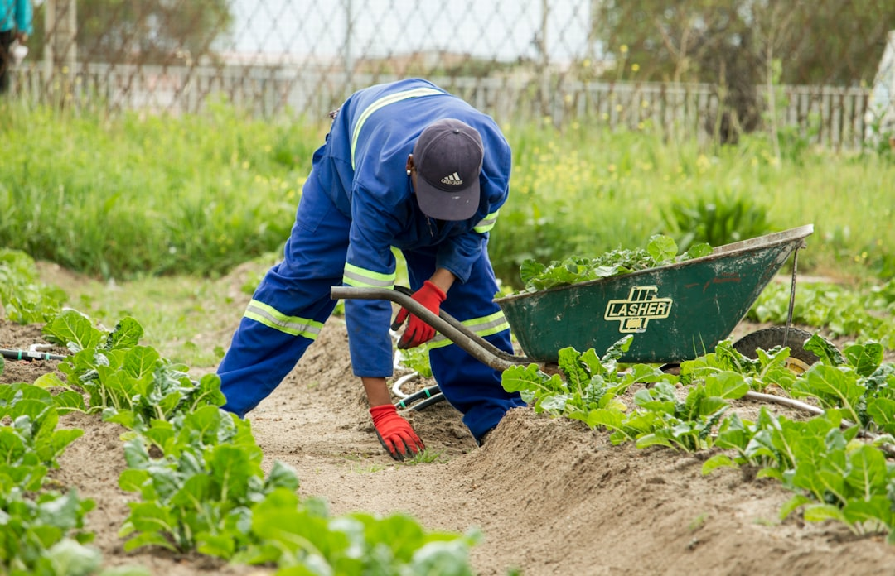

Partner With Us
We believe real change happens through collaboration rooted in respect, reciprocity, and shared purpose.
Local Communities

What They Bring
- Deep ancestral knowledge of plants, soils, and ecosystems.
- Land stewardship and connection to place.
- Cultural practices that sustain biodiversity.
What They Receive
- Co-built sustainable infrastructure (labs, seed houses, community spaces).
- Legal protection of traditional knowledge and fair benefit-sharing.
- Training opportunities and connection with research networks.
Researchers & Universities
What They Bring
- Scientific expertise in botany, pharmacology, ecology, anthropology, or related fields.
- Ethical commitment to collaboration and transparency.
- Research funding and international connections.
What They Receive
- Access to research sites and plant collections in collaboration with communities.
- Co-authorship and recognition frameworks respecting indigenous IP.
- Living-lab infrastructure and logistical support for fieldwork.
- A model for decolonial, community-centered research.

Activists & NGOs

What They Bring
- Experience in advocacy, environmental education, and grassroots organization.
- Communication and outreach channels.
- Project implementation expertise.
What They Receive
- A grounded, credible initiative to align with in the Amazon.
- Opportunities to co-host events, workshops, and awareness campaigns.
- Shared impact data and co-branded reports.
Donors & Philanthropic Organizations
What They Bring
- Financial support and network reach.
- Interest in long-term, regenerative impact.
What They Receive
- Transparent impact reporting and storytelling materials.
- Naming opportunities for specific gardens or programs.
- Participation in site visits, community events, and global panels.

Grow With Us
Every partnership begins with a conversation. Whether you are a researcher, an organization, a local leader, or an individual who believes in the power of living knowledge — we’d love to hear from you.
Get Involved
Whether you’re a researcher, a donor, or a dreamer — you can help this vision grow.
Partner
Collaborate as a researcher, institution, or garden.
Donate
Support infrastructure, training, and biodiversity preservation.
Volunteer
Join us on-site or remotely to help with communication, research, or design.